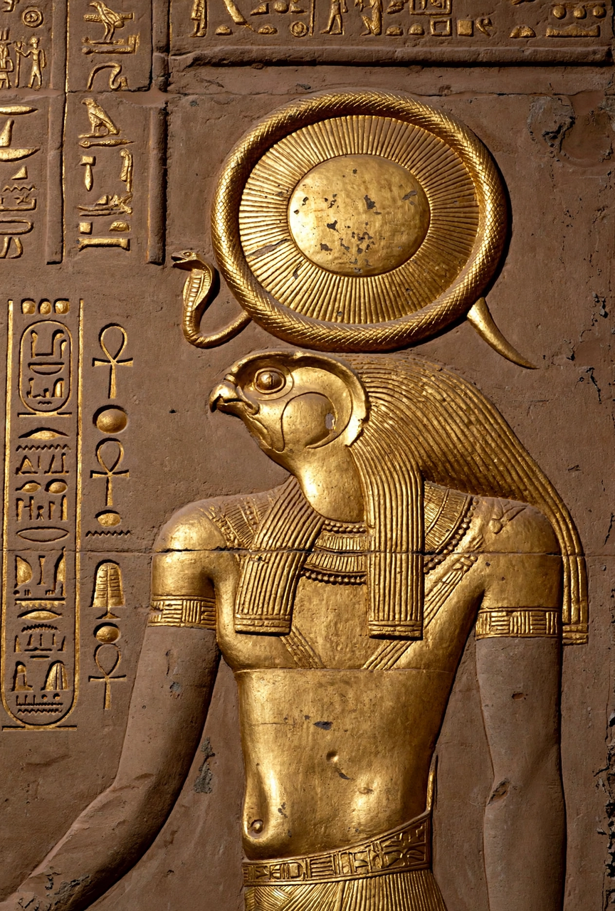

Ra

Ra (also Re; Egyptian: rꜥ) was the ancient Egyptian deity of the sun. By the Fifth Dynasty (c. 25th–24th centuries BCE) he had become one of the most important gods in Egyptian religion, identified primarily with the noon sun and regarded as creator, ruler of the heavens, and the divine model and ancestor of the pharaohs, who styled themselves "Son of Ra".
Mythology
In Heliopolitan theology Ra emerged self-created from the primordial waters of Nun, standing on the first mound of earth. Each day he sailed across the sky in his solar barque; each night he travelled through the Duat (underworld), uniting with Osiris and battling the serpent Apophis, who sought to devour the sun and plunge creation into chaos. His secret name — a source of his power — was tricked out of him by the goddess Isis in a well-known myth. Ra was frequently combined with other gods, as Amun-Ra, king of the gods in the New Kingdom, and Ra-Horakhty, "Ra, Horus of the Two Horizons".
Worship
Ra's principal cult centre was Iunu, known in Greek as Heliopolis. Fifth-Dynasty kings built sun temples at Abu Ghurab with great obelisks symbolising the sun's rays. The falcon-headed, sun-disked image of Ra remained central to Egyptian iconography for three millennia, and in the Greco-Roman period he was equated with Helios and Apollo.
See also: Egyptian mythology, Osiris